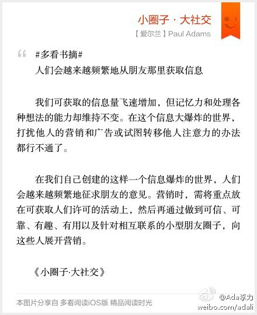

#多看书摘# 人们会越来越频繁地从朋友那里获取信息 我们可获取的信息量飞速增加，但记忆力和处理各种想法的能力却维持不变。在这个信息大爆炸的世界，打扰他人的营销和广告或试图转移他人注意力的办法都行不通了。 在我们自己创建的这样一个信息爆炸的世界，人们会越来越… 网页链接 
不靠谱的云服务...//@大城小胖: 哪家网盘先出一个 everbox一键转移工具 我以后就用哪家网盘了.... //@老赵: 求种子 //@wayne_华惠: 擦，这么快就完蛋啦，我们好十几G毕业照片都放在上面的。@36氪:国内第一批个人云存储服务盛大网盘EverBox宣布停止服务，用户需于2013年3月1日之前迁移备份数据 | 盛大网盘可以说是这个领域的第一批产品，但随着盛大创新院不断对其旗下产品进行调整，以及像百度、腾讯等巨头纷纷进入，EverBox如今也成了第一个说再见的产品。 网页链接 by @JohnTian
大梅行动也好快。//@云计算大梅: 文章很实用，已经编辑在CSDN云计算频道发布！推荐下。网页链接@糖醋鼻子:花了一下午时间整理了下家用私有云中的多点数据备份相关方案，有需要的朋友请点传送门 网页链接 cc @段念-段文韬 @Ada李力 @BeijingOpenParty
我们计划在春节后，三月中旬在北京办一个社区领导人的小型聚会。全天的聚会，CSDN提供场地，中餐和晚餐，主要是想让相互交流和分享下社区运营的经验。现在问下群里大家的意见，是周五的时间方便（3.15），还是周六(3.16)的时间好些?
人人都得干活 在一个小团队里，你需要的是干活的人，而不是监工。每个人都得做事，没有人可以袖手旁观。 这就意味着你在招聘中要避免招到监工型的人物，这些人喜欢对别人谆谆教导。对于小团队来讲，监工型的人就是累赘。他们想出各种事情让别人去做，在丢下自己的工作去安… 网页链接
会接着买程序员杂志的电子版么？ @CSDN @孟迎霞 //@小马msn: 今天全部买给回收废纸的，一共有50多斤，循环用纸，保护森林。@创业者马钧:过年大扫除中整理出来的九年程序员杂志准备按斤出售。自从有了网络，杂志在实效性上远远不及。加上电子书的普及，纸质杂志就更没保留的必要了。
你见过这样的经理吗，每日任务就是把大家的工作汇总下，做个表格，然后再交给更高的经理？ //@电脑领养的猪: 这说的太绝对了，团队中既要有人埋头做事，更要有人探头看天，产品经理不就是抬头看到方向，发现出更多需求，于是程序员可能有更多的活了的人嘛！~~@Ada李力:人人都得干活 在一个小团队里，你需要的是干活的人，而不是监工。每个人都得做事，没有人可以袖手旁观。 这就意味着你在招聘中要避免招到监工型的人物，这些人喜欢对别人谆谆教导。对于小团队来讲，监工型的人就是累赘。他们想出各种事情让别人去做，在丢下自己的工作去安… 网页链接
 网页链接
网页链接